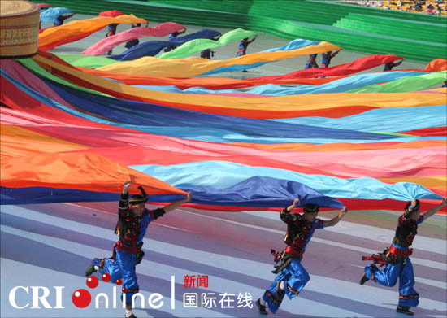
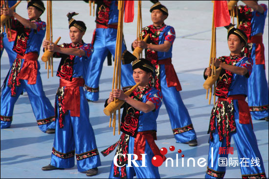
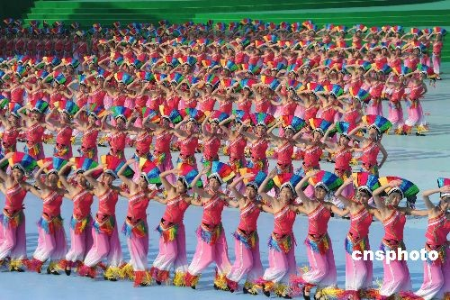
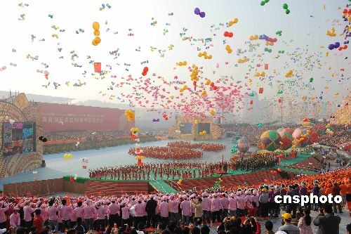
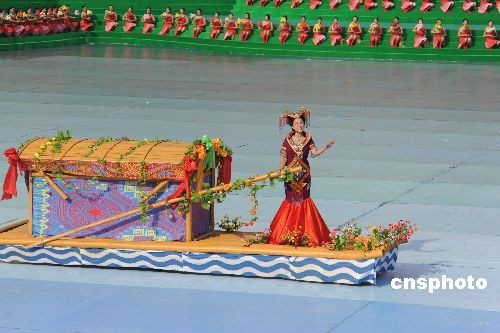

炫烂的壮锦象征着壮族人民多彩多姿的生活
歌舞中体现出广西各民族人民的豪情
广西壮族自治区成立五十周年庆祝大会十二月十一日上午在广西首府南宁民歌广场隆重举行。周永康、张德江、司马义·铁力瓦尔地、杜青林、李兆焯、李继耐等全体中央代表团成员到会祝贺。中央党政军有关部门、内蒙古、西藏、宁夏、新疆自治区和广东省的负责人到会表示祝贺。庆祝大会上表演了盛大的具有浓郁壮乡风格的文艺节目。

十二月十一日上午，广西壮族自治区举行成立五十周年庆祝大会。来自刘三姐的故乡宜州市、被誉为新一代“刘三姐”的广西著名歌手陈春燕，演唱一曲壮族山歌《多谢了》。